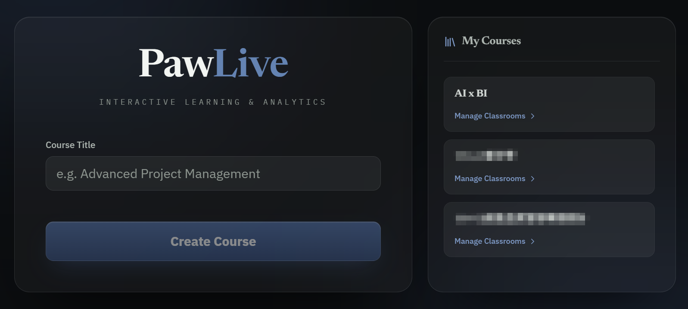
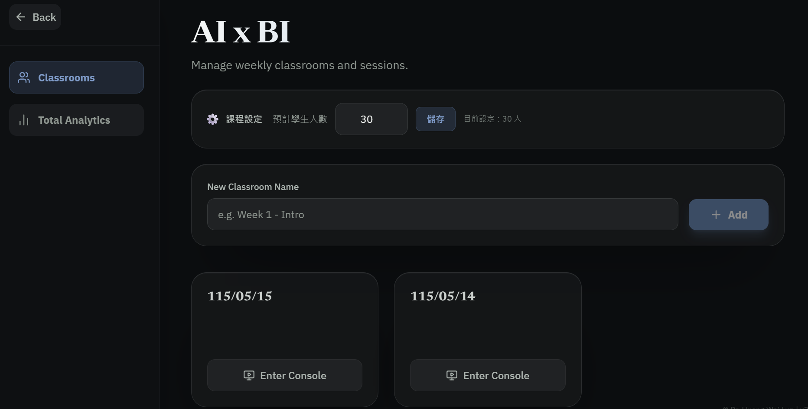
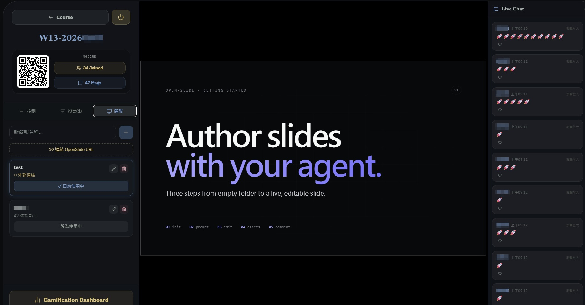
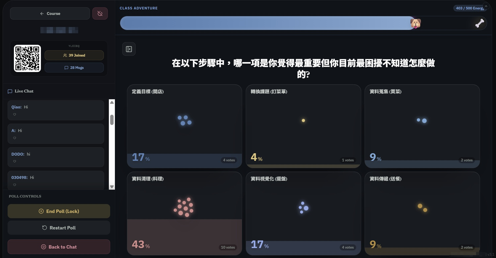
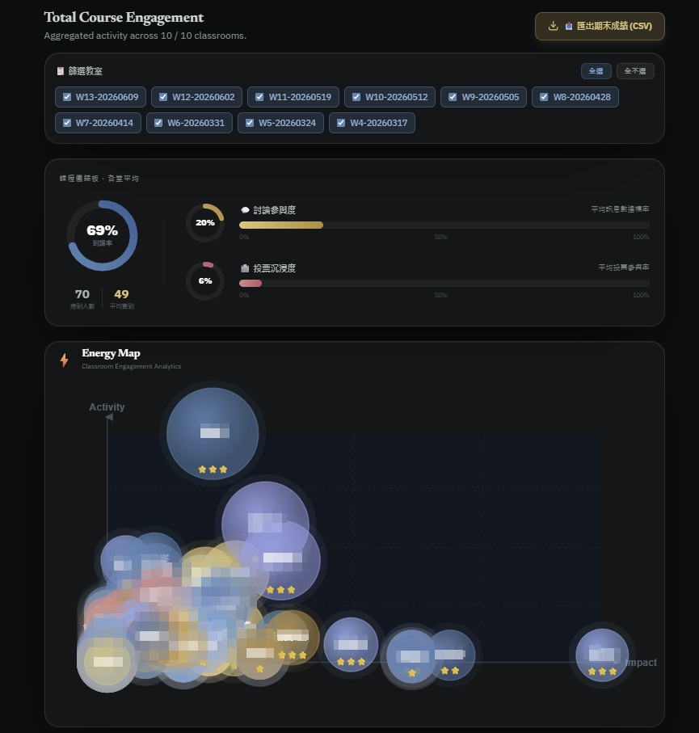

教學工具
PawLive
2026.04 · 個人專案

FIG. 04 — 產品主畫面
關於這個作品
PawLive 是一個針對實體課堂設計的即時互動平台。教師可建立課程、開設教室、發起投票，學生用手機掃 QR code 加入後，便能即時投票、聊天、獲得課堂加分。
後端全由 Firebase Firestore 驅動，所有狀態透過 onSnapshot 即時同步，不需刷頁面。左側控制台管理投票與簡報；右側 Live Chat 讓學生隨時留言互動，教師可一鍵 Spotlight 發言者。
課程結束後，教師儀表板顯示全班到課率、討論參與度、投票沉浸度，Energy Map 泡泡圖一眼看出哪位學生最活躍。投票、訊息、Spotlight 三個維度合算成 100 分量化成績，支援 CSV 匯出。
另有遊戲化冒險系統：課堂進度條、吉祥物，答對還能撒彩帶，讓學生主動參與。
作品亮點
學生掃 QR code 秒進課堂，無需刷頁面即時同步
教師三合一控制台：投票出題、簡報播放、學生聊天同畫面管理
Energy Map 泡泡圖：投票率 × 訊息數 × Spotlight，一眼看全班參與度
投票 + 訊息 + Spotlight 合算 100 分制成績，一鍵匯出 CSV
遊戲化冒險系統：進度條 + 吉祥物 + 答對撒彩帶
操作畫面



